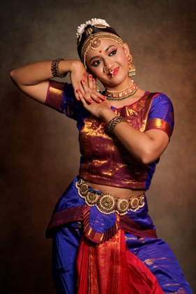

Kuchipudi is a major classical dance drama that originated in the village of Kuchipudi in Andhra Pradesh.
A unique feature of the dance form is that the dancer balances on the sharp edges of a brass plate while keeping time to the music. This routine is known as "Tarangam" translating to "waves of the sea".
To learn more about the artform visit: Kuchipudi